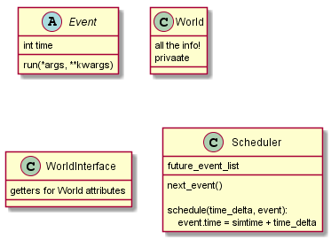

Notes
Table of Contents
1 General ideas
- Use some sort of finite-state-machine class 'World' with properties readable (NOT WRITEABLE) by everybody
2 IMPORTANT
- One event might be optional!
- Control 6 might involve threading and simulation
3 Decisions taken
- Clients first go to each location before figuring out whether they can actually ride or no. For example, they'll decide to go to some ride and get there before finding out their members don't satisfy the height requirement. After this, this attraction will go in a "cantride" list of places which won't be traversed a second time once all others have been visited.
- Same for restaurants?
4 Planning
4.1 EXTERNAL EVENTS
Entities should be able to respond to these
4.1.1 Rain
- Effects
- Aquatic rides close
- Their operators are free to work on others' lunch breaks
- Max 1 kid per adult
- Aquatic rides close
- Design choices to fit these:
- Rides have a
closedproperty@property def closed(self): if world.raining: return True if self.being_maintained: return True return False
- Operators can be reassigned
- Parents' children lists can be bounded depending on world conditions
- Rides have a
4.1.2 Invasion de ruziland
- Effects
- 40% of adults leave
- Probability of failures on rides reduced in half
- Design choices to fit these:
- Adults' patience becomes 0 immediately, i.e. it depends on world conditions
@property def patience(self): if world.being_invaded: return 0 return calculated_patience
- Failures in rides also depend on
world.being_invaded
4.1.3 Dia de colegio
- Effects:
- Kids don't need to be accompanied to go on rides, but they still have an adult in charge
- Their budget is the even distribution of their adults' budget
- Minimum of 10 kids per adults
- Adults enter free but can't enter rides
- Design decisions to fit these:
- Kids share their adults' budget.
@property def budget(self): if not self.independent: return super().budget return own_budget # evenly split blah blah
- ASSUME ADULTS AREN'T PARENTS, ONLY RESPONSIBLES. I.E., A KID CAN GO WITH A COMPLETE STRANGER, SO TO SPEAK. If adult doesn't have enough kids, fill him up until he has 10.
- For this, create kids only when adults have been defined. This is hopefully done the following:
def create_kids(self): if world.raining: create only one kid if world.school_day: create minimum 10 kids else: create random kids
- Adults have a sort of
can_ridestate. They can come into the park but not ride any rides.- CAN ADULTS GO INTO RESTAURANTS IF THEY CAN'T GO INTO RIDES? YES. MAKE RESTAURANTS OPEN FOR EVERYBODY ON SCHOOL DAYS.
4.2 Modelling

4.3 Libraries to use
- Use
bisect?
5 Entregable
5.1 Eventos
- Cliente intenta ingresar a parque
- Operador de porteria atiende a cliente
- Cliente ingresa a parque
- Cliente sale de parque
- Cliente llega a restaurante
- Cliente entra a restaurante
- Cliente recibe pedido
- Cliente sobrepasa tiempo maximo para comer
- Cliente sale de restaurante
- Cliente descanza
- Cliente termina de descanzar
- Cliente llega a atraccion
- Cliente entra a fila
- Cliente se sale de la fila
- Cliente entra a atracción
- Cliente sale de atracción
- Cliente se dirije a instalación
- Empleado comienza colacion
- Empleado termina colacion
- Operador revisa atraccion (Llama tecnico o limpiador)
- Operador inicia atraccion
- Operador llama a tecnico
- Limpiador se dirige a lugar
- Limpiador llega a lugar
- Limpiador limpia
- Tecnico se dirige a lugar
- Tecnico llega a lugar
- Tecnico repara
- Atraccion falla
- Atraccion termina
- Viejos clientes se retiran
- (Aqui operador revisa atraccion)
- Nuevos clientes comienzan a entrar
- Atraccion supera limite de tiempo de espera
- Atraccion comienza
- Lluvia (evento instantaneo)
- Invasion de ruziland (evento instantaneo)
- Dia de colegio (evento instantaneo)